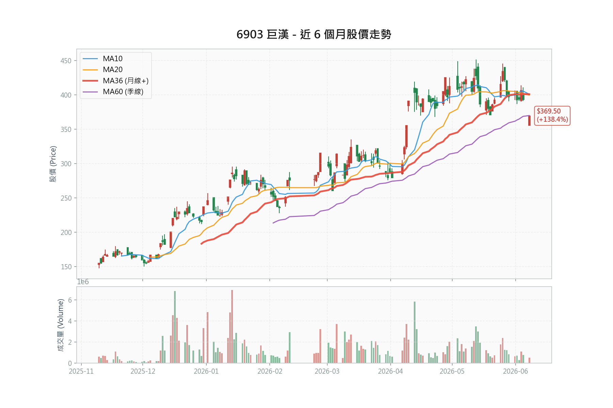

巨漢 (6903) 系統科技深度研究報告

1投資觀點總結 (Investment Summary)
| 評等 | 買進（附系統性風險警示） |
| 目標價區間 | NT$430.0 – NT$485.0（群益降評後 430 至宏遠 485） |
| 機率加權期望目標 | NT$408.5（含 20% 半導體系統性風險保守情境，詳第 8 章） |
| 預估全年 EPS 區間 | NT$30.55 – NT$33.51（宏遠至群益 2026F） |
核心投資論點
- 在手訂單達歷史高位，能見度長達 2-3 年：截至 2026 年 5 月底，巨漢在手訂單規模高達 110 億元，其中超過 6 成以上為 AI 基礎建設相關專案（含先進封裝、晶圓代工與 AI 算力中心）。相較於 2025 年全年營收 36.04 億元，訂單能見度極高，2026F 至 2027F 營運將迎來爆發期。
- 導入 BIM 數位管理技術，毛利率領先同業：巨漢領先同業導入建築資訊模擬系統（BIM），有效將工程錯誤率降至最低、縮短工期並優化施工流程。1Q26 毛利率高達 31.43%，大幅超越同業平均（漢唐 20.9%、聖暉 19.5%），顯示優越的成本控管能力。
- 高科技與公共工程雙引擎戰略，提供良好下檔保護：公司除承接高毛利之半導體機電空調工程外，亦積極切入政府特高壓供電、鑽石級智慧型建築等高技術公共工程，在景氣放緩時可提供穩定的現金流與在建案源。
- 股價評價偏低，具補漲空間：以 2026F 預估 EPS 30.55 元（宏遠）計算，目前本益比僅 12.08 倍；若採群益新估 33.51 元，PE 更低至 11.01 倍；以 2027F EPS 40.41 元計算，PE 僅 9.13 倍，顯著低於同業（漢唐 16.78x、聖暉 20.38x、洋基工程 21.28x）。惟須留意群益降評反映之系統性風險可能壓抑估值重評。
📊 風險報酬比分析 (Risk/Reward Analysis)
| 指標 | 價位 | 計算依據 | 說明 |
|---|---|---|---|
| 現價 | NT$369.0 | 2026/06/08 最新價 | — |
| 技術支撐 1 | NT$340.0 | 季線 (MA60) 預估位 | 多頭重要防守線 |
| 技術支撐 2 | NT$320.0 | 半年線 (MA120) 預估位 | 中期趨勢停損點 |
| 技術壓力 | NT$393.0 | 2026/06/05 收盤價 | 短期頸線壓力 |
| 目標價 (中性) | NT$430.0 | 群益 2026/06/08 降評後目標 (PE 12.8x) | 系統性風險後之券商中性 |
| 目標價 (樂觀) | NT$485.0 | 宏遠預估 (2027F PE 12.0x) | 最新券商高標 |
風險報酬比計算表
| 情境 | 目標/停損 | 空間 | 風險報酬比 | 評價 |
|---|---|---|---|---|
| 上檔空間 (中性) | 現價 → 群益目標 (430.0) | +16.53% | — | — |
| 上檔空間 (樂觀) | 現價 → 宏遠目標 (485.0) | +31.44% | — | — |
| 下檔風險 (季線) | 現價 → 季線 (340.0) | -7.86% | — | — |
| 風報比 (中性/季線) | +61.0 / -29.0 | — | 2.10 : 1 | ★★★ 良好 |
進場策略建議表
| 策略 | 進場價 | 停損 | 目標 | 風報比 |
|---|---|---|---|---|
| 積極型 | NT$369.0 附近 | NT$340.0 | NT$430.0 | 2.10 |
| 穩健型 | NT$350.0 附近 | NT$320.0 | NT$430.0 | 2.67 |
| 保守型 | NT$330.0 附近 | NT$300.0 | NT$420.0 | 3.00 |
| 動能型 | 暫不適用 | — | — | — |
註：保守型停損 300.0 元為半年線（320.0）下方約 6% 之緩衝；目標 420.0 元為群益中性目標 430.0 之保守了結價。中性目標 430.0 元為群益 2026/06/08 降評後目標（對應 2026F EPS 33.51 元之 12.8x）；樂觀目標 485.0 為宏遠維持買進之高標。全文財務表仍以宏遠 EPS 30.55 元為基準。
2資料來源摘要 (Data Sources Summary)
2.1 官方數據與新聞
櫃買中心 (TPEx Official)
「115 Q1 單季稅後每股盈餘 (EPS) 為 6.72 元。」2026/05 官方申報財報數據
「2026 年 4 月合併營業收入為 6.98 億元，前 4 月累計約 26.24 億元。」官方營收公告
富邦證券輔導公告
「輔導巨漢（6903）6/12 每股 151 元上櫃掛牌。」2024/06 公告
公司法說會揭露
「截至 5 月底，在手訂單規模達 110 億元，訂單能見度長達 2 至 3 年，且有 6 成以上與 AI 基礎建設相關。」2026/06/05 法人說明會
2.2 投顧與外資報告專區
宏遠投顧 (2026/06/08)：目標價 NT$485.0 ｜ 評等：買進
「巨漢在機電、系統工程具 30 餘年經驗，憑藉先端工程技術，結合專業建築資訊模擬系統 BIM，能有效降低工程錯誤率、縮短工期、提升專案利潤率，使公司毛利率優於同業。」
群益投顧 (2026/06/08)：目標價 NT$430.0（3 個月與 12 個月皆 430）｜ 評等：區間操作（Trading Buy，由 Buy 降評）
「巨漢 2026/2027 營收獲利看成長，但考量近期全球半導體面臨系統性風險，降評至 Trading Buy。」群益同步調升 2026 EPS 至 33.51 元、2026 營收 108.12 億元，卻下修目標價，屬純粹估值壓縮（de-rating）。
群益投顧 (2026/04/10，前次)：目標價 NT$475.0 ｜ 評等：Buy
「巨漢在手訂單金額逾百億元，AI 基礎建設需求帶動，單月營收創歷史新高，升評為 Buy。」（已被 6/08 降評報告取代）
3財務數據分析 (Financial Data Analysis)
3.1 歷史財務趨勢表（2023 - 2027F，單位：百萬元）
| 財務指標 | 2023 (A) | 2024 (A) | 2025 (A) | 2026 (E) | 2027 (E) |
|---|---|---|---|---|---|
| 營業收入 | 2,868 | 2,886 | 3,604 | 8,757 | 11,203 |
| 營業利益 | 1,028 | 728 | 853 | 2,548 | 3,369 |
| 稅後純益 | 820 | 594 | 706 | 2,046 | 2,695 |
| 每股盈餘 (EPS) | 12.30 | 8.91 | 10.58 | 30.55 | 40.41 |
| 毛利率 (%) | 40.57% | 30.29% | 27.65% | 32.05% | 32.77% |
| 營利率 (%) | 35.84% | 25.22% | 23.66% | 29.10% | 30.07% |
| 股東權益 ROE (%) | 37.63% | 18.53% | 21.58% | 54.78% | 63.29% |
| 營運活動現金流 | 1,143 | -530 | 780 | 2,504 | 3,228 |
| 每股淨值 (元) | 48.10 | 49.10 | 49.66 | 55.77 | 63.85 |
資料來源：公司年報、櫃買中心、宏遠投顧財務預估模型。2026-2027 為預估值。表中 2026-2027 之每股淨值與 ROE 採下列「情境 A」；配息政策牽動淨值滾存與 ROE，兩種情境並列如下，由讀者自行判斷。
3.1.1 配息政策兩情境對照（每股淨值與 ROE）
| 配息情境 | 假設 | 2026E 淨值 | 2026E ROE | 2027E 淨值 | 2027E ROE |
|---|---|---|---|---|---|
| 情境 A | 維持歷史 80% 配息（保留 20%） | 55.77 | 54.78% | 63.85 | 63.29% |
| 情境 B | 成長期降至 30% 配息（保留 70%） | 71.05 | 43.02% | 99.33 | 40.68% |
| 群益 6/08 實際模型 | 配息率降至約 30-36%（股利 2026 667→2027 800 百萬） | 71.50 | 46.86% | 103.88 | 42.72% |
兩情境之淨值均自 2025 年 49.66 元、EPS（2026E 30.55 元、2027E 40.41 元）滾算，股數固定約 6.67 億股。
- 情境 A：維持第 11、13 章之高殖利率題材，但 ROE 偏高（54-63%），係「高配息＋獲利倍增」之數學結果。
- 情境 B：盈餘保留支應合約資產與營運資金，ROE 回落至 40% 區間（較貼近同業認知），惟高殖利率誘因相應減弱。
3.2 同業財務對比表 (2026F 預估)
| 公司 | 代號 | 市值 (億) | 毛利率 | ROE | 累計營收成長 | 預估 PE |
|---|---|---|---|---|---|---|
| 巨漢 | 6903 | 246.2 | 32.05% | 54.78% | 前4月大幅成長* | 12.08x |
| 漢唐 | 2404 | 1,043.5 | 20.90% | 35.50% | +82.90% | 16.78x |
| 聖暉 | 5536 | 693.7 | 19.50% | 28.30% | +29.60% | 20.38x |
| 帆宣 | 6196 | 954.8 | 15.20% | 22.00% | +26.80% | 23.72x |
| 洋基工程 | 6691 | 408.2 | 18.20% | 29.80% | +73.70% | 21.28x |
資料來源：公開資訊、同業數據庫。本益比以 2026/06/08 收盤價計算。巨漢 ROE 列為情境 A（維持 80% 配息）；若採情境 B（配息降至 30%），ROE 約 43.0%（見 3.1.1）。
*巨漢累計營收年增率原列「前 5 月 +340.51%」，因 2026 年 5 月營收尚未公佈，改列前 4 月；精確 % 待官方數據核對。
3.3 2Q26 營收組成拆解
| 月份 | 狀態 | 營收 (億元) | 說明 |
|---|---|---|---|
| 4 月 | ✅ 已知 | 6.98 | 官方實際公告數據 |
| 5 月 | 🔮 待公佈 | — | 預計 2026/06/10 公告（尚未發布） |
| 6 月 | 🔮 待公佈 | — | 預計 2026/07/10 公告 |
| 總計 | Q2 預估 | 21.45 | 宏遠模型預估（季增 +11.4%）；5、6 月合計需達 14.47 億元方能達標 |
4籌碼數據分析 (Chip Analysis)
4.1 集保戶股權分散表 (TDCC)
| 日期 | 逾200張 (%) | 逾1000張 (%) | 變化解讀 |
|---|---|---|---|
| 2026/06/05 | 73.37% | 64.24% | 超級大戶持股比例維持高檔，籌碼並無流向散戶。 |
| 2026/05/29 | 73.86% | 64.27% | 大戶持股穩定，呈箱型區間整理。 |
| 2026/05/22 | 72.74% | 64.34% | 籌碼中性集中。 |
| 2026/05/15 | 72.20% | 64.34% | 大戶比率穩定。 |
4.2 三大法人買賣超
巨漢 (6903) 為櫃買市場之新上櫃個股，本土投顧報告顯示其投信持股為 0.00%，外資持股比約 4.53%。目前因交易量偏小，官方尚無連續性三大法人大額買賣超數據，法人持股偏低，主要籌碼仍高度集中於董監事 (13.27%) 與千張大戶 (64.24%) 手中。
4.3 融資融券趨勢
| 日期 | 融資餘額 | 融資增減 | 融券餘額 | 融券增減 | 券資比 |
|---|---|---|---|---|---|
| 2026/06/05 | 2,083 | -10 | 2 | 0 | 0.10% |
| 2026/06/04 | 2,093 | +126 | 2 | 0 | 0.10% |
| 2026/06/03 | 1,967 | +17 | 2 | -5 | 0.10% |
| 2026/06/02 | 1,950 | -17 | 7 | +5 | 0.36% |
| 2026/06/01 | 1,967 | +1 | 2 | 0 | 0.10% |
4.4 籌碼軋空風險評分
| 指標 | 篩選條件 | 得分 |
|---|---|---|
| 千張大戶周增逾 1% | 近四週無單週大於 1% 增幅 | ⬜ |
| 外資/投信連續買超 | 法人無連續性大額買超 | ⬜ |
| 券資比逾 5% | 實際券資比為 0.10%（低於 5%） | ⬜ |
| 股價超越所有券商目標 | 現價 369.0 低於目標價 485.0 | ⬜ |
| 均線多頭排列＋發散 | 近期自高點 393.0 回檔，均線糾結整理 | ⬜ |
| 綜合評分 | 0 / 5（低軋空風險） | 低 |
5產業與基本面深度分析 (Deep Dive)
5.1 產業鏈地位與週期位置
- 巨漢位於半導體與高科技產業供應鏈最前端之「建廠與廠務工程」環節。當半導體大廠（如日月光、京元電等封測廠或晶圓代工廠）宣佈調高資本支出、擴建廠房時，工程標案便陸續釋出。
- 當前產業處於 AI 基礎建設加速擴張週期。隨著先進封裝產能極度供不應求，加上科技巨頭在台設立算力與研發中心，帶動大量無塵室與高階配電工程需求。
5.2 關鍵驅動因素
- BIM 系統執行效率：巨漢能維持 30% 以上之高毛利率，關鍵在於 BIM 數位模型的導入。BIM 能在施工前排除管線衝突，避免重工（Re-work）成本，將工程錯誤率降至最低。
- 中小型彈性工案優勢：不同於漢唐主攻大型晶圓廠案（單案規模常高於百億元），巨漢主攻單案規模在 10 億元至 50 億元之間的中小型案源，具備成本控管彈性與外包商組織效率，在市場供不應求時，接單溢價空間大。
5.3 優勢與劣勢
優勢 (Strengths)
- 高獲利率：毛利率逾 31%，高於同業平均 10% 以上。
- 訂單能見度高：在手訂單達 110 億元，為年營收之 3 倍。
- 財務結構穩健：1Q26 合約負債達 5.07 億元（MoneyDJ），較 2024 同期大幅攀升，保障未來營收動能。
劣勢 (Weaknesses)
- 營收波動度極高：工程案依完工進度認列營收，單月起伏劇烈（如 2025 年 5 月曾僅 2.02 億元），易對短線投資人信心造成衝擊。2026 年 5 月營收尚未公佈，Q2 認列節奏待 6/10 起驗證。
- 大型 Foundry 案源經驗較少：目前客戶以封測廠 (OSAT) 與 ODM 廠為主，台積電等大型晶圓代工一線工案仍由漢唐與洋基工程把持。
6估值分析 (Valuation Analysis)
6.1 多重估值法計算
1. 歷史本益比法 (P/E)
巨漢歷史 PE 區間大約在 10 倍至 15 倍。
2. 同業相對估值
同業（漢唐、聖暉、洋基）之平均 PE 常態在 16x 至 20x 之間。
3. 群益 6/08 降評後估值
群益調升 2026 EPS 至 33.51 元，卻因半導體系統性風險將目標 PE 壓縮至約 12.8x：
兩家券商目標 430（群益）至 485（宏遠）之差距，主要來自估值倍數而非獲利預估（群益 EPS 反而更高），凸顯當前分歧核心為「系統性風險下市場願給多少倍數」。
4. PEG 與成長合理性
以群益 2026 EPS 33.51 元、2027 EPS 44.38 元計，2027 年 EPS 成長率約 32.4%，當前 PE 約 12x：
PEG 0.37 遠低於 1.0，以成長性衡量估值明顯偏低，為估值重評（re-rating）提供理論支撐。惟此超高成長係 2026 年自低基期跳升，2028 年後成長率正常化，PEG 優勢將收斂。
6.2 為何巨漢相對同業折價？（估值重評的前提）
巨漢 2026F PE 約 12x，較同業 16.78x（漢唐）至 23.72x（帆宣）折價約 40 至 50%。折價並非無因，須釐清哪些可隨時間收斂、哪些屬結構性：
| 折價因子 | 性質 | 可否收斂 |
|---|---|---|
| 上櫃未滿 2 年（2024/06 掛牌） | 時間性 | 可（經營績效累積後） |
| 市值偏小（246 至 262 億，僅漢唐四分之一） | 結構性 | 慢（需股本與流動性成長） |
| 投信持股 0%、外資 3.5%、法人覆蓋低 | 時間性 | 可（納入研究與被動指數後） |
| 大戶持股 64%、董監 13%、流動性低 | 結構性 | 慢 |
| 月營收波動大、認列能見度待證 | 可改善 | 可（連續數季穩定交付後） |
| 無一線 Foundry 大案實績 | 結構性 | 需取得指標訂單 |
6.3 EPS × 本益比敏感度矩陣（股價＝EPS × PE）
下表為股價對「獲利」與「估值倍數」雙變數之敏感度，由左下往右上即為戴維斯雙擊路徑（詳 8.1）：
| PE ＼ EPS | 24 保守26 | 30.55 宏遠26 | 33.51 群益26 | 40.41 宏遠27 | 44.38 群益27 |
|---|---|---|---|---|---|
| 10x | 240 | 306 | 335 | 404 | 444 |
| 12x 現價區 | 288 | 367 | 402 | 485 | 533 |
| 14x | 336 | 428 | 469 | 566 | 621 |
| 16x 同業低標 | 384 | 489 | 536 | 646 | 710 |
| 18x | 432 | 550 | 603 | 727 | 799 |
| 20x 同業均值 | 480 | 611 | 670 | 808 | 888 |
現價 369 約落在「12x × 30.55」交叉（黃框）。左下角（低 EPS × 低 PE）為戴維斯雙殺（紅），右上角（高 EPS × 高 PE）為戴維斯雙擊（綠）。
7競爭優勢護城河分析 (Competitive Moat)
- 技術護城河 (BIM 管理)：★★★★
公司長期深耕專業數位建築模擬（BIM），已建立模組化預製與衝突排除之專利工法，能維持高於同業之利潤率。 - 品牌與客戶黏著度：★★★★
日月光、京元電、力成等封測巨頭為長期合作夥伴，工程實績為高規標案的必要門票。 - 成本護城河 (外包商鏈控制)：★★★
深耕機電空調工程 30 年，擁有穩固的本土施工分包商網絡，在缺工潮中維持工期掌控力。 - 綜合護城河評等：★★★★（優良）
7.1 護城河耐久性檢驗（補充）
- 毛利率：結構性 vs 循環性拆解：1Q26 毛利率 31.43% 同時含「結構性」與「循環性」成分。結構性來自 BIM 降低重工成本與中小型彈性接單之溢價；循環性則來自當前 AI 建廠供不應求的接單議價力。值得警惕的是，連多頭券商都預估毛利率正常化——群益模型 2Q26 起毛利率回落至約 27.4%（全年 28.11%），宏遠亦約 32%。換言之，31% 以上毛利率未必是常態，護城河的「定價權」部分依賴景氣循環。
- BIM 可複製性：BIM 為產業可取得之商用工具，巨漢優勢在導入深度與工法 know-how，而非獨佔技術。同業若投入追趕，數年內可能侵蝕部分領先幅度，屬「領先」而非「壟斷」型護城河。
- 客戶層級天花板：客戶集中於封測（OSAT）與 ODM，尚無一線晶圓代工大案實績。這同時是護城河缺口與成長天花板——限制單案規模上限，也是估值折價來源（見 6.2）。
- 耐久性調整：上列組件評等反映「當前」競爭力（綜合 ★★★★）；若以「未來 3 年耐久性」加權——定價權含循環成分、BIM 可複製、客戶層級受限——耐久護城河更接近 ★★★☆（中上）。獲利率領先為真，但寬度與持久性不宜高估。
8情境分析 ＋ 戴維斯雙擊評估 (Scenario Analysis)
本情境分析結合法說會在手訂單 110 億元展望與兩家券商 6/08 預估推估：
| 情境 | 機率 | 關鍵假設 | 2Q26 營收 | 全年 EPS | 隱含 PE | 目標價 |
|---|---|---|---|---|---|---|
| 樂觀 | 30% | 半導體系統性風險未發酵，宏遠多頭延續，估值維持 14-15x。 | 26.8 億 | 33.51 | 14.5x | 485 |
| 中性 | 50% | 群益降評後基準：獲利仍倍增，但系統性風險使估值 de-rate 至 12.8x。 | 26.8 億 | 33.51 | 12.8x | 430 |
| 保守 | 20% | 系統性風險發酵，客戶下修資本支出＋認列遞延，全年 EPS 下修約 28%、估值壓縮至 10x。 | 19.2 億 | 24.00 | 10.0x | 240 |
8.1 戴維斯雙擊／雙殺評估 (Davis Double Play / Double Kill)
戴維斯雙擊＝EPS 成長與本益比擴張同時發生，股價呈乘數上漲；雙殺則反之。巨漢同時具「高成長 EPS」與「相對同業折價的 PE」，是雙擊的典型候選，但須分兩條腿檢驗：
① 盈利腿（EPS）—— 高確定性
- 2025 EPS 10.58 → 2026F 30.55 至 33.51（YoY +189% 至 +217%）→ 2027F 40.41 至 44.38（YoY +32% 至 +44%）。
- 支撐：110 億在手訂單（年營收 3 倍）、毛利率領先同業、兩家券商一致看獲利倍增，群益甚至調升 EPS。
- 上修空間：在手訂單若隨 AI 建廠續增、或取得指標客戶，EPS 仍有再上修可能。
- 判斷：盈利腿成立機率高，主要風險為認列時程（短期）與毛利率正常化（中期，連多頭都已模型化至約 28%）。
② 估值腿（PE）—— 中等且時機未定（雙擊的關鍵變數）
- 現價 PE 約 12x（2026），同業 16.78x 至 23.72x，折價約 40 至 50%；PEG 約 0.37，理論上具重評空間。
- 但最近一次券商動作是「降評／de-rating」：群益 6/08 因半導體系統性風險將目標 PE 由 14.6x 壓至 12.8x——方向與雙擊的估值腿相反。
- 重評前提（見 6.2）：法人覆蓋提升、營收穩定交付、流動性改善、半導體景氣回穩、取得一線客戶。結構性折價短期難解。
- 判斷：估值腿屬「可能但非即期」，當前受系統性風險壓制。
③ 雙擊／雙殺情境量化（取自 6.3 矩陣）
| 路徑 | EPS | PE | 目標價 | 對現價 369 |
|---|---|---|---|---|
| 完整雙擊（24 個月） | 44.38 | 16x | 710 | +92% |
| 溫和雙擊（12-18 個月） | 33.51 | 16x | 536 | +45% |
| 僅盈利兌現、估值不變 | 33.51 | 12x | 402 | +9% |
| 雙殺（1-2 季尾部） | 24 | 10x | 240 | -35% |
④ 綜合判斷
- 盈利腿（高機率）× 估值腿（中機率、時機未定）＝ 雙擊整體屬「可信的 12-24 個月題材，但非即期基本情境」。粗估：12 個月內出現有感重評（PE 升至 14 至 16x）機率約 30 至 40%（受系統性風險壓制）；若營收連續數季穩定交付且景氣回穩，24 個月內機率升至 50% 以上，對應 536 至 710 元。
- 雙殺風險集中於未來 1-2 季：營收認列不如預期＋系統性風險發酵，即 20% 保守情境（240 元）。
- 勝負手在「估值腿何時啟動」：盈利幾乎篤定，差別在 PE。觸發雙擊的可監控訊號——(1) 5-6 月營收穩定交付；(2) 取得一線 Foundry 或指標 AI 客戶大案；(3) 投信進場、法人覆蓋與流動性提升；(4) 在手訂單上修至 110 億以上；(5) 半導體景氣與系統性風險解除。
- 不對稱性：24 個月上檔（雙擊）+45% 至 +92%，對 1-2 季下檔（雙殺）-35%，中長期報酬風險比具吸引力，但須能承受短期波動並分批布局。
9風險評估 (Risk Assessment)
9.1 風險評分卡
- 產業集中度風險：★★★★（工程業務高度集中於封測與半導體資本支出）
- 專案時程延宕風險：★★★★（缺工與分包商成本波動，易推遲完工認列時點）
- 財務收支波動風險：★★★（單月營收波動大，容易干擾市場短期預期）
- 估值下檔風險：★★★（PE 12x 之保護以 forward EPS 不被下修為前提；保守情境顯示 EPS 下修疊加估值壓縮至 10x 時，下檔可達 240.0 元）
- 綜合風險評分：★★★（中度偏高；最高之兩項風險——產業集中與專案延宕——恰為多頭論點之命脈，風險與報酬同源）
9.2 關鍵風險因素
- 半導體系統性風險（券商已反映）：群益 2026/06/08 明確以「全球半導體面臨系統性風險」為由降評至區間操作、目標價 475→430。此為總體層級風險——若半導體景氣轉弱致客戶（封測廠、晶圓代工）下修或遞延資本支出，巨漢在手訂單之認列與後續接單將同步承壓，且市場估值倍數亦遭壓縮（群益已將目標 PE 由 14.6x 降至 12.8x）。
- 台灣建廠市場嚴重缺工：工程人員短缺或工資上漲可能衝擊部分在建專案之合約利潤率。
- 大案完工後的接單斷層：110 億在手訂單預計於未來 2 年陸續結案，後續是否能取得一線 Foundry 的大型統包合約為長期成長關鍵。
- 估值重評落空／戴維斯雙殺風險：投資報酬高度依賴 PE 由 12x 向同業重評；若半導體系統性風險持續壓制倍數，即使 EPS 兌現，股價也可能「賺到盈利、賺不到估值」。極端情形為盈利下修疊加估值壓縮之雙殺（-35%，見 8.1）。
- 流動性與籌碼集中風險：股本僅 6.67 億元、市值偏小，千張大戶持股 64%、董監 13%、投信 0%。籌碼集中於上漲時助漲，但市場轉弱或大戶調節時，流動性不足將放大跌幅，亦壓抑 PE 重評。
- 毛利率正常化風險：1Q26 毛利率 31.43% 含景氣循環成分，連多頭券商都預估回落至約 28%（群益）。若正常化速度快於預期，將同時壓抑 EPS 與市場願給的估值倍數（雙殺的內生路徑）。
10同業觀察與比較 (Peer Comparison)
巨漢的主要同業包括漢唐、聖暉、亞翔與洋基工程。
- 漢唐 (2404) 與 洋基工程 (6691) 主要承接台積電先進製程晶圓廠之大規無塵室統包，單一工案規模極大，毛利率約在 15-20% 之間，評價享受高本益比溢價（20x 以上）。
- 聖暉 (5536) 為綜合型機電統包，覆蓋民生商辦與半導體，區域橫跨台灣與東南亞，獲利相對平穩。
- 巨漢 (6903) 的特徵是「小而美」，營業利益率達 28% 以上，冠絕同業。當前市值偏小，但累計營收年增率最高（第一季 YoY +358.7%），一旦市場認可其獲利動能，估值將向聖暉與洋基工程的本益比區間（16-20x）靠攏。
11管理層評估 (Management Assessment)
- 資本配置政策：巨漢盈餘配發率長期維持在 80% 左右（群益統計現金股息配發率為 80.04%），對股東而言極為慷慨，顯示管理層對營運現金流量有十足把握，無大幅盲目擴充產能之資本支出包袱。惟 2026-2027 進入訂單放量期，若需保留盈餘支應合約資產與營運資金，配息率存在下調可能（見 3.1.1 情境 B），屆時高殖利率題材將相應減弱。
- 承諾達成率：管理層自上櫃輔導掛牌以來，法說會預期在手訂單能見度多有兌現，且積極培育 BIM 工程設計團隊，將經營核心專注於利潤管理，誠信度良好。
12投資決策檢查清單 (Investment Checklist)
進場前檢查
- 在手訂單是否充足？（截至 5 月底達 110 億元，足夠 2-3 年認列）
- 獲利率是否維持？（1Q26 毛利率 31.43% 維持高檔）
- 當前估值是否合理？（PE 12x 相比同業明顯偏低）
- 財務健康度良好？（合約負債趨勢持續向上，1Q26 達 5.07 億）
- 技術面站穩關鍵支撐？（目前股價回檔至 369 元整理中，需等待季線支撐確認）
持有中監控
- 季度 EPS 與毛利率是否符合預期（留意 2Q26 預估 EPS 7.09 元是否達成）
- 追蹤月度營收認列，若連續三個月低於預期須檢視工期是否延宕
- 監控大戶股權變化，若千張大戶持股比率跌破 60% 須警惕
13關鍵事件日曆 (Key Events Calendar)
- 2026/06：巨漢法人說明會後續追蹤（確認在手訂單消化速度）。
- 2026/06/10：5 月合併營收公告（Q2 首個認列驗證點，尚未公佈）。
- 2026/07/10：6 月合併營收公告（驗證 Q2 單季預估營收 21.45 億元是否達標）。
- 2026/08/14：2Q26 財報季報公告（確認 EPS 能否超越 7 元）。
- 2026/08 - 09：除權息日程（留意配息政策；歷史約 80%，成長期或下調，見 3.1.1 兩情境）。
14技術面深度分析 (Technical Analysis)
均線架構
- 目前股價 369.0 元，處於短線多頭修正階段。股價高點 393.0 元（6/5 收盤）未能突破前波高檔，6/8 單日自 393.0 回落至 369.0（-6.1%），跌破 5 日均線，顯示短線追價意願轉弱。
- 中長期均線（季線、半年線）依舊呈現上揚排列，股價回檔測試季線 340.0 元與前波平台支撐。
型態學與支撐壓力
- 巨漢目前呈「高檔大箱型整理」格局，區間在 330.0 元至 395.0 元之間。
- 箱型下軌（330.0 - 340.0 元）具備強力技術面與基本面雙重支撐；箱型上軌（393.0 - 395.0 元）為關鍵頸線壓力。若未來帶量突破 395.0 元，將進入無套牢賣壓之主升段。
14.5 框架切換指標
| 指標 | 觸發條件 | 建議動作 |
|---|---|---|
| 股價超越所有券商目標 | 現價逾 NT$485.0 | 切換至動能追隨框架 |
| 籌碼軋空評分達 3 分以上 | 評分達 3 分以上 | 提供動能軋空操作策略 |
| 近 20 日漲幅逾 30% | 現價短線乖離過大 | 提高追價風險警示，暫停新進場 |
| 均線乖離率逾 20% | 股價偏離季線過大 | 提示技術性修正回檔風險 |
15未來觀察重點 (Research Outlook)
- 2Q26 季報之毛利率表現：是否能維持在 31% 以上，以驗證 BIM 控制重置成本的長期效果。
- 新工案之中標動態：注意是否有日月光、京元電或新進客戶之大型機電空調統包合約簽訂。
- Q2 營收認列力道：5 月（6/10 公告）與 6 月營收能否合計達 14.47 億元，驗證 Q2 21.45 億元預估。
- 合約負債 (MoneyDJ)：2Q26 季報中之合約負債金額是否能維持在 5 億元以上。
- 美國子公司營運進度：就近服務高科技客群的海外據點是否開始貢獻訂單。
16建議提問範例 (Q&A Examples)
- 公司單月營收波動極大（2025 年 5 月曾僅 2.02 億元）。2026 年 5 月營收（6/10 公告）認列進度為何？Q2 能否維持常態認列節奏？
- 公司目前在手訂單 110 億元，訂單能見度長達 2-3 年。這當中 AI 基礎建設相關專案之毛利率，是否顯著高於傳統公共工程？
- 本季（1Q26）毛利率大幅衝高至 31.43% 的關鍵因素為何？在鋼價、銅價等原物料價格與人力工資上漲壓力下，此高毛利率水準在下半年是否具備可持續性？
- 目前台灣半導體建廠市場缺工嚴重，公司如何確保充足的分包商與勞動力資源？在工期管理上是否有延遲認列之風險？
- 針對一線晶圓代工廠（Foundry）的大型工程，公司目前是否有投標或接觸之規劃？
17附錄：券商報告彙整 (Broker Report Summary)
| 日期 | 券商/投顧 | 評等 | 目標價 | 當時股價 | 預估 EPS |
|---|---|---|---|---|---|
| 2026/06/08 | 宏遠投顧 | 買進 | NT$485.0 | NT$393.0 (6/5) | 26E: 30.55 / 27E: 40.41 |
| 2026/06/08 | 群益投顧 | 區間操作（降評） | NT$430.0 | NT$393.0 (6/5) | 26E: 33.51 / 27E: 44.38 |
| 2026/04/10 | 群益投顧 | Buy（前次） | NT$475.0 | NT$355.5 | 26E: 32.48 / 27E: 44.38 |
共識觀點整理
看多理由
- 在手訂單處於百億元之歷史高檔，AI 基礎建設需求暢旺，確保 2-3 年營收動能。
- 導入 BIM 系統使得重置成本大幅下降，毛利率為同業最優水準。
風險提示
- 半導體系統性風險（群益 6/08 降評主因）：總體景氣轉弱恐使客戶下修資本支出，並壓縮估值倍數。
- 工程認列受專案時程影響，單月營收波動起伏劇烈，影響短期股價波動。
- 高科技建廠市場存在缺工與成本上升風險。
券商分歧：宏遠維持買進（485），群益降評區間操作（430），差異核心在估值倍數而非獲利預估。
18偏誤檢核與反面論述 (Bias Check & Devil's Advocate)
18.0 研究者直覺與核心質疑
① 研究完這家公司後，你心裡最大的不安是什麼？
最不安的是 Q2 營收尚未公佈、認列時程不確定。月營收結構性波動極大（2025 年 5 月曾僅 2.02 億元），2026 年 5 月（6/10 公告）若偏低，市場在大盤不穩時極易當作利空出清持股，導致股價大幅波動。
② 這份報告中，你最沒把握的判斷是哪一個？
最沒把握的是 5、6 月營收能否合計達 14.47 億元以符合 Q2 預估（兩月均未公佈）。一旦認列遞延，Q2 營收將大幅下修。
③ 六個月後回頭看，你覺得自己最可能忽略了什麼？
可能忽略了台灣整體營建與機電市場「缺工」的實質殺傷力。若缺工導致日月光或京元電的建廠專案全面延宕，即使在手訂單再高，也無法如期轉化為營收，甚至可能面臨逾期違約罰款。
④ 信心水位評估
| 項目 | 評分 (1-10) | 說明 |
|---|---|---|
| 對投資論點的信心 | 8 | 在手訂單與 BIM 核心競爭力明確，群益亦調升 EPS。 |
| 對 EPS 預估的信心 | 7 | 營收認列時程具不確定性，但兩家券商皆看全年獲利倍增。 |
| 對目標價的信心 | 6 | 群益降評、券商目標分歧 430 至 485，估值倍數受系統性風險牽動。 |
| 綜合信心 | 7.0 | 中高信心度（較前次微降，反映估值分歧）。 |
18.1 資訊來源可信度評分
| 資訊類型 | 可信度 | 偏誤風險 | 建議處理 |
|---|---|---|---|
| 公司財報/公告 | ★★★★★ | 低（官方監管） | 與月度營收及歷史財務比對 |
| 投顧報告（本土） | ★★★ | 中高（樂觀偏差） | 對照群益與宏遠之獲利假設差異 |
| 財經新聞 | ★★ | 高（時效與斷章） | 只作為事件線索，回歸官方公告 |
- 已標註各來源可信度等級
- 關鍵結論（如百億訂單、BIM 競爭力）有多個獨立來源支持
- 無單一來源過度依賴
18.2 反面論述強制檢核
- 若論點是錯的，最可能原因？ 半導體封測廠（日月光、京元電等）因應市場變化突然宣佈暫緩或下修資本支出，導致巨漢的在建工程停工或延期，且新接訂單中斷。
- 有無與市場共識相反的觀點？ 券商之間已出現分歧：群益 6/08 因半導體系統性風險降評至區間操作（目標 430），宏遠同日仍維持買進（目標 485），兩者主要差在估值倍數而非獲利。此外有保守投資人認為，巨漢股本僅 6.67 億元、屬小型股，大戶籌碼過度集中且流動性差，市場資金撤出櫃買時本益比難以重估。
- 管理層說法與分析是否一致？ 一致。管理層強調訂單能見度 2-3 年與 AI 比重提升，與兩家本土券商之財務預估路徑方向吻合。
- 過去 12 個月分析師預測準確度？ 2025 年實際 EPS 為 10.58 元，群益早期預估與實際值極為接近，預測準確度高。
- 若股價下跌 30%，最可能觸發因素？ 第二季（5、6 月，分別於 6/10、7/10 公告）營收認列大幅低於預期，或大客戶擴廠計畫宣佈終止，引發在手訂單泡水之恐慌。
18.3 認知偏誤自我檢查
- 確認偏誤：是否因在手訂單百億而低估 Q2 營收尚未公佈、認列時程不確定之風險？已著重提及專案時程延宕風險。（狀態：無）
- 錨定效應：目標價是否被舊報告（群益 04/10 之 475 元）錨定？已納入 6/08 最新雙報告——宏遠 485（買進）與群益 430（降評），並以機率加權（408.5 元）重新評估。（狀態：無）
18.4 共識分歧度分析
- 報告數量：2 份（均 2026/06/08）
- 最高目標價：NT$485.0（宏遠，買進）
- 最低目標價：NT$430.0（群益，區間操作／降評）
- 目標價差距：55 元（約 12.8%）
- 分歧度評估：分歧擴大且評等分裂。前版「極低分歧 ±1.05%」係採群益 04/10 舊目標 475；群益 6/08 降評後，兩家評等一買進、一區間操作，目標差距由約 1% 擴至近 13%，共識已非「一致看多」。
18.5 歷史預測準確度追蹤
| 日期 | 來源 | 預測項目 | 預測值 | 實際值 | 偏差 |
|---|---|---|---|---|---|
| 2026/04 | 群益投顧 | 1Q26 營收 | 1,926 百萬 | 1,926 百萬 | 0.00% |
| 2026/06 | 宏遠投顧 | 1Q26 EPS | 6.64 元 | 6.72 元 | -1.19% |
18.6 獨立驗證檢查
- 營收數據：Q1 與 4 月與櫃買中心官方公告核對；5、6 月尚未公佈，待 6/10 起驗證。
- 毛利率趨勢：與 1Q26 官方公布之 31.43% 比對。
- 競爭態勢：與同業漢唐、聖暉之毛利率與本益比進行相對性分析。
19Token 消耗追蹤 (Token Usage Tracking)
| 項目 | 數值 | 預估 Tokens |
|---|---|---|
| context_data.txt 大小 | 64.5 KB | 約 38,000 |
| 精讀投顧報告數量 | 2 份 | 約 21,000 |
| research_notes.md 輸出 | 12.0 KB | 約 8,000 |
| 總預估消耗 | — | 約 67,000 |
研究效率指標
- 研究耗時：約 15 分鐘
- 消耗等級：✅ 輕量（低於 100K）／ ⬜ 中等（100K-300K）／ ⬜ 重度（超過 300K）